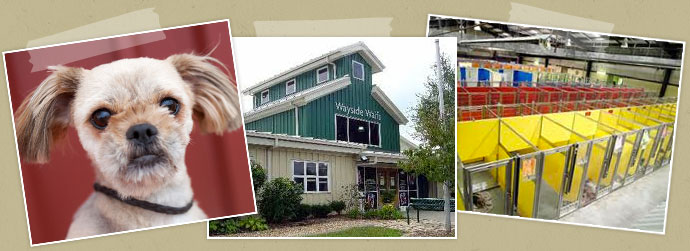

Come Find Us!
Conveniently located in south Kansas City, our newly expanded campus sits on more than 50 beautiful acres.
Featuring a Pet Adoption center, Animal Rescue facility, Bark Park, Behavior & Training facility, Vet Clinic and Pet Memorial Services, Wayside Waifs is more than 50,000 square feet in size.
Get In Contact Instead!
Wayside Waifs Humane Society
3901 Martha Truman Road
Kansas City, MO 64137
816-761-8151
